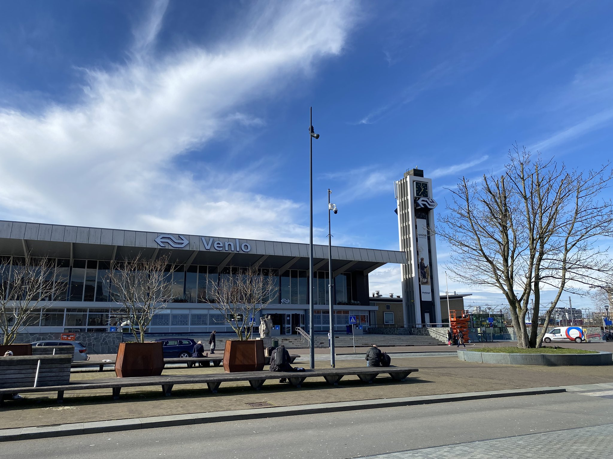

Picture and Videos

This is the Douro River. The Douro River is a river that flows westward through the north-central part of the Iberian Peninsula in Europe. This photo was taken during a trip to Portugal. The first place he traveled to after coming to the same was Porto, Portugal. He traveled to see his friend.
This photo was taken during a visit to Fenlo, Holland. He cycled 8 hours from his house in Dusseldorf to the Netherlands. He decided to go because he got a new bicycle. He had a lot of fun on the way there, but it was very hard on the way back because he just had to go home.
This video was taken on a day when he studied for 8 hours. I was impressed to see him not only hanging out but also studying German and doing other studies. This video is my favorite. When I am not motivated to study, I watch this video to motivate myself.
This video is from a visit to a place in Germany called the Rust Belt. Rust Belt is a term used to describe areas where industry is in decline. In this video, you will learn about the history as well as the beautiful scenery! I also learned about German industry by watching this video.